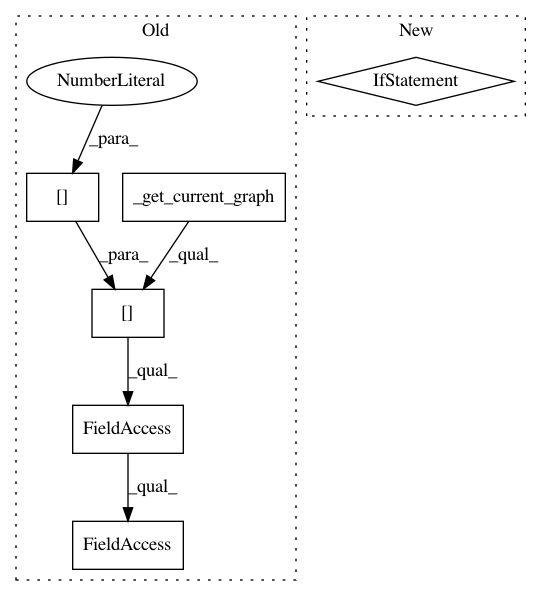

d1e6e624ef891543c5bba32bb0a696d350714693,coremltools/converters/nnssa/coreml/ssa_converter.py,SSAConverter,_convert_pad,#SSAConverter#Any#,1330
Before Change
input_names = self._get_input_tensors(node)
constant_value = 0
if len(node.inputs) == 3:
constant_value = self._get_current_graph()[input_names[2]].value.val
// this layer takes at most 2 inputs
input_names = input_names[:2]
layer = self._get_builder().add_constant_pad(
name=node.name,
After Change
constant_value = 0
if len(node.inputs) == 3:
constant_value = input_nodes[2].value.val
if constant_value == -np.inf:
INT_MIN = - np.iinfo(np.int64).max - 1
constant_value = np.float(INT_MIN)
if constant_value == np.inf:
INT_MAX = np.iinfo(np.int64).max
constant_value = np.float(INT_MAX)
In pattern: SUPERPATTERN
Frequency: 3
Non-data size: 6
Instances
Project Name: apple/coremltools
Commit Name: d1e6e624ef891543c5bba32bb0a696d350714693
Time: 2019-08-20
Author: smq@apple.com
File Name: coremltools/converters/nnssa/coreml/ssa_converter.py
Class Name: SSAConverter
Method Name: _convert_pad
Project Name: apple/coremltools
Commit Name: d1e6e624ef891543c5bba32bb0a696d350714693
Time: 2019-08-20
Author: smq@apple.com
File Name: coremltools/converters/nnssa/coreml/ssa_converter.py
Class Name: SSAConverter
Method Name: _convert_transpose
Project Name: apple/coremltools
Commit Name: d1e6e624ef891543c5bba32bb0a696d350714693
Time: 2019-08-20
Author: smq@apple.com
File Name: coremltools/converters/nnssa/coreml/ssa_converter.py
Class Name: SSAConverter
Method Name: _convert_reduction